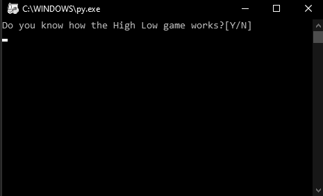
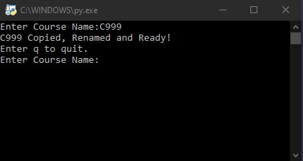

Projects
High Low Game
This is a game of chance. This game uses a psuedo-random number generator to generate a number then the player can guess whether the next number is higher, lower or equal to that number.
Create New Course
This was a quick project born from automating my course workflow. When I start a class, I like to plan the course over a calendar but creating a folder with a course name, copying the calendar and renaming it was tedious. I decide to write a quick python script to automate and put it on my GitHub to show off my programming and to automate as much as possible.
 Bown to Be Good Website
Bown to Be Good Website
This website was to try my hand at website building through AWS. My first plan was to create this website as simple static website and fill in the data. The next step was try to do some JavaScript coding. The final step was to make a web app and any final improvements to the website.